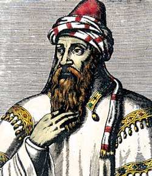
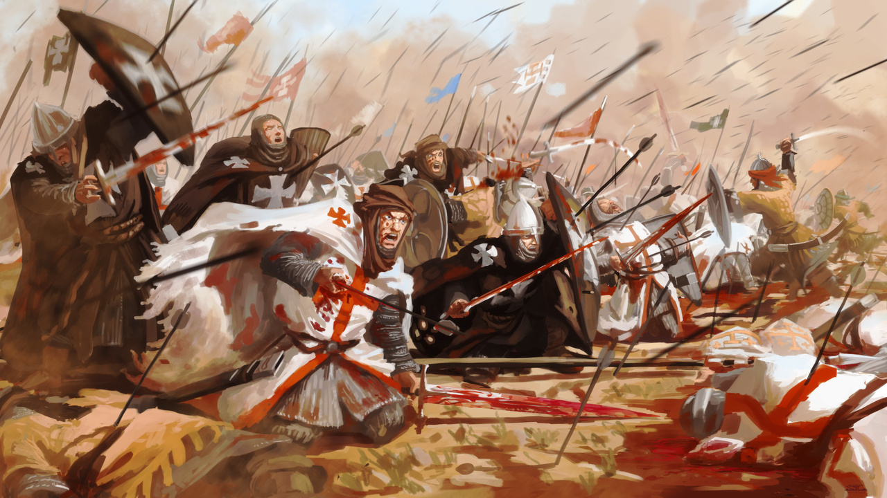
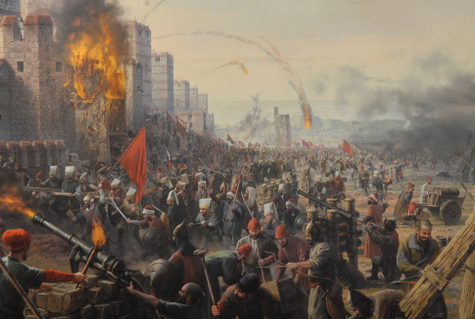

Так какой же смысл был у крестовых походов? Сейчас мы это узнаем
Целью первых крестовых походов было освобождение Палестины, в первую очередь Иерусалима (с Гробом Господним), от турок-сельджуков, однако позднее крестовые походы велись и ради обращения в христианство язычников Прибалтики, подавления еретических и антиклерикальных течений в Европе (катары, гуситы и так далее) или решения политических задач пап.
Название «крестоносцы» появилось потому, что участники крестовых походов нашивали себе на одежду кресты. Считалось, что участники похода получат прощение грехов, поэтому в походы отправлялись не только рыцари, но и простые жители и даже дети.
1) Первый крестовый поход начался в 1096 году и продолжался до 1099 года.
Он был организован в 1095 году решением римского папы Урбана II по просьбе византийского императора Алексея I с целью помощи восточным христианам в защите Анатолии от наступления сельджуков. В ходе похода также дополнительной целью стало освобождение священного города Иерусалима и Святой земли от мусульман. Первоначально обращение римского папы было адресовано только французскому рыцарству, но впоследствии поход превратился в полномасштабную военную кампанию, а его идея охватила все христианские государства Западной Европы. Феодалы и простой народ всех национальностей по земле и морю выдвигались на Восток, по пути освободив от власти турок-сельджуков западную часть Малой Азии и устранив мусульманскую угрозу Византии и в июле 1099 года завоевали Иерусалим. Во время 1-го крестового похода было основано Иерусалимское королевство и другие христианские государства, которые объединяются под названием Латинского Востока. Важную роль в истории Крестовых походов сыграли духовно-рыцарские ордены.
2) Второй крестовый поход состоялся в 1147—1149 годах.
Французская нация, во главе со своим королем, выставила значительные силы. Как сам король Людовик VII, так и феодальные французские князья выказали много сочувствия делу Второго крестового похода; собрался отряд численностью до 70 тысяч. Цель, которую предстояло достигнуть Второму крестовому походу, была ясно намечена и строго определена. Задача его состояла в том, чтобы ослабить муссульского эмира Занги и отнять у него Эдессу. Эту задачу успешно выполнило бы и одно французское войско, состоявшее из хорошо вооруженной армии, которая по пути увеличилась вдвойне приставшими добровольцами. Если бы крестоносное ополчение 1147 года состояло из одних французов, оно направилось бы другим путем, более кратким и более безопасным, чем тот, который оно избрало под влиянием германцев.
Итоги Второго крестового похода. Таким образом Второй крестовый поход, который казался таким блистательным, так много обещавшим вначале, сопровождался вполне ничтожными результатами. Мусульмане не только не были ослаблены, а, напротив, нанося христианам одно поражение за другим, уничтожая целые крестоносные армии, получили большую уверенность в собственных силах, энергия их увеличилась, у них зародились надежды на уничтожение христианства в Малой Азии. На Востоке происходили резкие столкновения между немцами и французами. Немецкое войско в глазах других наций было принижено своими роковыми неудачами. Уже после поражения Конрада III немцы служили предметом насмешек для французов; следовательно, Второй поход показал, что совместные действия французов и немцев на будущее время невозможны. Этот поход обнаружил также рознь между палестинскими и европейскими христианами. Для восточных христиан пятидесятилетнее пребывание в среде мусульманского влияния не прошло бесследно в культурном отношении. Таким образом, между поселившимися в Азии европейцами и прибывавшими сюда из Европы новыми крестоносцами обнаружилась принципиальная рознь; они взаимно стали не понимать друг друга. Меркантильный характер, подкуп, распущенность, разврат сделались отличительной чертой нравов палестинских христиан.
3) Третий крестовый поход состоялся в 1189-1192 годах.
Третий крестовый поход (1189—1192) был инициирован римскими папами Григорием VIII и (после смерти Григория VIII) Климентом III. В Крестовом походе приняли участие четверо самых могущественных европейских монархов — германский император Фридрих I Барбаросса, французский король Филипп II Август, австрийский герцог Леопольд V и английский король Ричард I Львиное Сердце. Третьему Крестовому походу предшествовал захват Саладином Иерусалима в октябре 1187 года.
Война с Салах-ад-дином (Саладином)
Новое направление делам на Востоке дал Саладин; при нем произошло соединение египетского халифата с багдадским. Салах-ад-дин по своей политической сообразительности стоял далеко выше своих врагов-европейцев. Саладин начал свою деятельность уже после Второго крестового похода (1147—1148). После окончания Второго крестового похода 16-летний Салах-ад-дин участвует в захвате фатимидского Дамаска войсками мосульского и халебского эмира Нур-ад-дина. В 1161 году участвует в оккупации Каира войсками полководца Нур-ад-дина Асад ад-Дина Ширкуха ибн Шади. В 1165 году 27-летний Салах-ад-дин уже как командующий отразил наступление призванных халифом-имамом Египта крестоносцев. В 1169 году Асад ад-Дин Ширкух захватил весь Египет, задушил халифа и сам стал эмиром при халифе Нур-ад-дине. Ближайшим помощником и формально визирем стал 31-летний Салах-ад-дин. В 1169 году Асад ад-Дин Ширкух умер и Салах-ад-дин становится визирем Египта и полководцем Нур-ад-дина. В 1174 году Нур-ад-дин и король Иерусалимского королевства Амори I умирают.
Война началась в 1187 году. Салах-ад-дин решился наказать иерусалимского короля, как за проступки Рено де Шатильон, так и за его лишь видимую независимость. Войска Салах-ад-дина выдвинулись из Алеппо и Мосула и были сравнительно с силами христиан весьма значительны. В Иерусалиме можно было набрать всего до 2 тысяч рыцарей и до 15 тысяч пехоты, но и эти силы не были местные, а составлялись из приезжих европейцев.
Битва при Хаттине
Битва при Хаттине — сражение, произошедшее 4 июля 1187 года между Иерусалимским королевством крестоносцев и силами династии Айюбидов. Крестоносцы были разгромлены мусульманскими армиями под началом Саладина.
Сражение
В субботу, 4 июля 1187 года «разверзлись облака смерти, и померк свет в этот день скорби, страдания, горя и разрушений». В битве, длившейся семь часов, погибло около 17000 человек, а король Ги Лузиньян, его брат Амори (коннетабль королевства), магистр тамплиеров Жерар де Ридфор, Рено де Шатильон, Онфруа Торонский и многие другие попали в плен. В этой битве также был потерян Святой Животворящий Крест Господень.
Окончание похода
Ричард, который, оставаясь в Азии, рисковал потерять свою корону, заключил 1 сентября 1192 года договор с Саладином. Этот постыдный для чести Ричарда мир оставлял за христианами небольшую береговую полосу от Яффы до Тира, Иерусалим оставался во власти мусульман, Святой крест не возвращен. Саладин даровал христианам мир на три года. В это время они могли свободно приходить на поклонение святым местам. Через три года христиане обязывались войти в новые соглашения с Саладином, которые, само собой разумеется, должны были быть хуже предыдущих. Этот бесславный мир лег тяжелым обвинением на Ричарда. Современники подозревали его даже в измене и предательстве; мусульмане упрекали его в чрезмерной жестокости.
В октябре 1192 года Ричард оставил Сирию. Для него, однако, возвращение в Европу представляло немалые затруднения, так как у него везде были враги. После долгих колебаний он решился высадиться в Италии, откуда предполагал пробраться в Англию. Но в Европе его сторожили все враги, которых он немало нажил. Около Вены в Австрийском герцогстве он был узнан. По приказу Леопольда V он был схвачен рыцарем Георгом Роппельтом и заключен в замок Дюрнштейн в тюрьму, где содержался около двух лет. Только под влиянием римского папы и сильного возбуждения английской нации, он получил свободу. За его свободу Англия заплатила Леопольду V до 23 тонн серебра
4) Четвёртый крестовый поход состоялся в 1202-1204 годах.
В объявленный папой Иннокентием III Четвертый Крестовый поход отправились преимущественно французы и венецианцы. Перипетии этого похода изложены в книге французского военачальника и историка Жоффруа Виллардуэна "Завоевание Константинополя" — первой пространной хронике во французской литературе.
Подготовка к походу
В 1198 году христиане предприняли несколько неудачных попыток отвоевать Иерусалим. Иннокентий III хотел стать во главе Крестового похода и тем самым восстановить авторитет Рима, который был подорван Германией. Разослав легатов во все католические страны с требованием отдать сороковую часть имущества на новый поход, Папа начал сбор средств (в том же 1198).
Иннокентий III в своем послании о крестовом походе обещал всем рыцарям, которые будут участвовать в войне за Святую землю, освобождение от налоговой повинности, списание всех долгов, сохранность и неприкосновенность имущества. Это послание привлекло огромное количество бедняков и должников, которые планировали поправить свое положение за счет похода.
Взятие Константинополя(13 апреля 1204 года)
войсками крестоносцев было одним из эпохальных событий средневековой истории и имело далеко идущие последствия для всей Европы. Взятию предшествовали две довольно напряжённые осады 1203 и 1204 годов, в ходе которых свои усилия объединили венецианский флот и западноевропейская (преимущественно французская) пехота. После захвата города начались массовые грабежи и убийства греко-православного населения, что было своего рода местью за резню латинян греками в 1182 году. 9 мая новым императором был провозглашён Балдуин Фландрский, что положило начало формированию целой плеяды «латинских» государств на захваченных крестоносцами территориях, хотя греческая знать на периферии империи не покорилась и продолжала борьбу.
Результаты Четвёртого крестового похода
Четвёртый крестовый поход, превратившийся из «пути ко Гробу Господню» в венецианское коммерческое предприятие, приведшее к разграблению Константинополя латинянами, обозначил глубокий кризис крестоносного движения. Итогом этого похода стал окончательный раскол западного и византийского христианства.
Собственно Византия после этого похода перестаёт существовать как государство на более чем 50 лет; на месте бывшей империи создаются государства: Латинская империя, Никейская империя, Эпирский деспотат и Трапезундская империя. Часть бывших имперских земель в Малой Азии были захвачены сельджуками, на Балканах — Сербией, Болгарией и Венецией.
5) Пятый крестовый поход состоялся в 1217—1221 годах.
Первоначально новый Крестовый поход был провозглашён в 1215 году папой Иннокентием III на четвёртом Латеранском соборе. Начало было намечено на 1217 год. К тому моменту умер папа Иннокентий, но идею похода поддержал его преемник Гонорий III.
Несмотря на то, что правитель Священной Римской империи Фридрих II, занятый внутренними проблемами в империи, в походе участие не принимал, а король Англии Иоанн Безземельный умер, поход состоялся. В 1217 году в Святую землю отправились значительные отряды крестоносцев, во главе которых встали король Венгрии Андраш II, герцог Австрии Леопольд VI и герцог Меранский Оттон I.
Военные действия шли вяло, и в 1218 году король Андраш вернулся домой. Вскоре в Святую землю прибыли новые отряды крестоносцев, под предводительством Георга Видского и графа Голландии Вильгельма I (на пути часть их помогала христианам в борьбе с маврами в Португалии). Крестоносцы решили напасть на Египет, который был в то время главным центром мусульманского могущества в Передней Азии. Сын аль-Адиля, аль-Камиль (аль-Адиль умер в 1218 году), предложил чрезвычайно выгодный мир: он соглашался даже на возвращение Иерусалима христианам. Это предложение было отвергнуто крестоносцами. В ноябре 1219 года, после более чем годовой осады, крестоносцы взяли Дамиетту. Удаление из лагеря крестоносцев Леопольда и короля Иоанна Бриеннского отчасти было возмещено прибытием в Египет Людвига I Баварского с немцами. Часть крестоносцев, убежденная папским легатом Пелагием, двинулась к Мансуре, но поход окончился полной неудачей, так как в это время начал разливаться Нил, и тогда, теснимые повсюду крестоносцы заключили в 1221 году с аль-Камилем мир, по которому получили свободное отступление, но обязались очистить Дамиетту и вообще Египет. Между тем на Изабелле, дочери Марии Иоланты и Иоанна Бриеннского, женился Фридрих II Гогенштауфен. Он обязался перед папой начать крестовый поход.
6) Шестой крестовый поход состоялся в 1228-1229 годах.
Поход начался в 1228 году. В Святой земле Фридрих восстановил укрепления Яффы и в феврале 1229 года заключил договор с египетским султаном Аль-Камилем. В марте Фридрих вступил в Иерусалим, а в мае отплыл из Святой земли. Фридрих достиг цели не войной, а дипломатией: ему удалось заключить договор с мусульманами, по которому они отдали ему Иерусалим, так как не хотели сражаться с крестоносцами.
7) Седьмой крестовый поход состоялся в 1248—1254 годах.
крестовый поход, проведённый французским королём Людовиком IX
К 1248 году французский король собрал 15-тысячное войско, включавшее 3000 рыцарей и 5000 арбалетчиков на 36 судах. Для финансирования экспедиции были привлечены значительные денежные средства, что делало поход очень дорогостоящим предприятием. В 1249 году французские войска под командованием короля Людовика IX начали Седьмой крестовый поход. Французы на пути в Египет высадились на Кипре, где переждали зиму. Во время пребывания французов на острове король вёл активные переговоры с другими христианскими правителями и монархами. О помощи короля просили Латинская империя, Антиохийское княжество и тамплиеры.
В марте 1250 года, когда армия была на грани истощения, Людовик попытался отступить к Дамьетте, однако был настигнут мамлюками и разбит в сражении при Фарискуре. Его ослабленные и деморализованные войска были уничтожены мамлюками, а сам он попал в плен. Больной дизентерией король был отдан под наблюдение арабского лекаря. В мае того же года пленные французы с королём был отпущены за выкуп в 800 000 безантов. Половина этой суммы согласно договору была уплачена ещё до того, как Людовик IX должен был покинуть Египет. Кроме того, по условиям договора египтянам возвращалась Дамьетта. Сразу же после освобождения король с уцелевшими воинами отплыли в Акру — последний оплот власти крестоносцев на Востоке.
8) Восьмой крестовый поход изначально был чисто французский и начался летом 1270 года под командованием Людовика IX.
Восьмой крестовый поход известен тем, что является последней серьёзной попыткой европейцев вторгнуться в земли арабов. Знать уже не желала продавать своё имущество, чтобы отправиться в далекие пустыни. Впервые руководителю крестового похода пришлось взять на себя расходы полностью и платить жалованье рыцарям.
14 июля французские корабли достигли берега древнего Карфагена. Высадившись, крестоносцы захватили башню, охраняемую маврами, разбили неподалёку лагерь и начали готовиться к осаде Туниса. Французы питались солёным мясом, их мучили голод и жажда. В лагере произошли вспышки лихорадки и дизентерии. Умер юный принц Иоанн Тристан. Вскоре заболел и Людовик IX. Он повелел молиться за него, своему наследнику Филиппу он изрёк наставление. Через некоторое время Людовик IX скончался.
Вскоре в Африку прибыл король Сицилии Карл I Анжуйский. Он привёл с собой большую армию воинов креста. Французские и сицилийские войска совместно оттеснили мавров и подошли к городу. Правитель Туниса, испугавшись, отправил послов в лагерь крестоносцев.
31 октября было заключено перемирие. Тунис обязался платить дань королю Сицилии. Также христианским священникам позволялось селиться в нём и проводить проповеди в местных церквях. На обратном пути крестоносцев ждала морская буря. Погибло четыре тысячи воинов, в том числе и брат короля. Филипп III Смелый отправился во Францию. На пути домой погибла и юная королева. Опечаленный монарх вёз на родину останки отца, брата и жены.
Сын английского короля Генриха III — Эдуард попытался продолжить поход в Палестине. Он успешно продвигался вперёд, но вскоре пожелал вернуться в Акру, чтобы обратить местного эмира в христианскую веру. Эмир отправил к Эдуарду посла, который оказался убийцей. Тот застал принца одного в комнате и бросился на него с кинжалом. Раненный в голову и руку, Эдуард всё же одолел посланника.
Через некоторое время Калаун (англ.), преемник Бейбарса, отправился войной на христианские Триполи, Лаодикею и Акру. Вскоре все города были взяты, а христиане изгнаны со Святой земли.